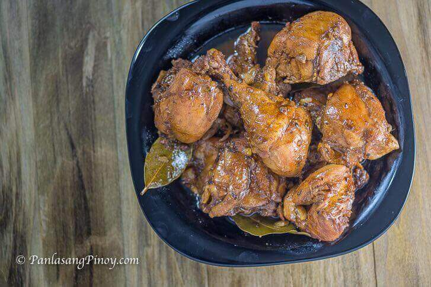

Chicken Adobo is a sort of chicken stew from the Philippines. Chicken is marinated in soy sauce and spices before being pan-fried and stewed till tender. The meal became popular due to its wonderful taste and ease of preparation. So here’s how we cook it:p
Instructions
Wise advice from panlasangpinoy
When making Filipino chicken adobo, you can use any portion
of the chicken. Thigh, drumstick, and breast are the most usual sections I utilize. When making adobo, dark soy sauce is
commonly used. You may, however, use any type of soy sauce you choose. It's not a terrible idea to use mild soy sauce.
Coconut aminos can also be used.
White vinegar is frequently used. Cane vinegar and apple cider vinegar are also effective.
Garlic contributes to the flavor of adobo. Use as much garlic as you like.
Chicken adobo can also be made with onions. If this is the case, it will need to be sautéed after the chicken has been pan-fried.